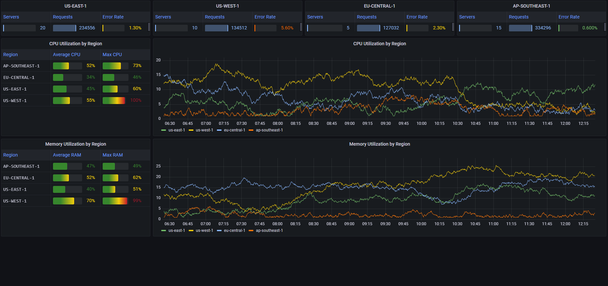
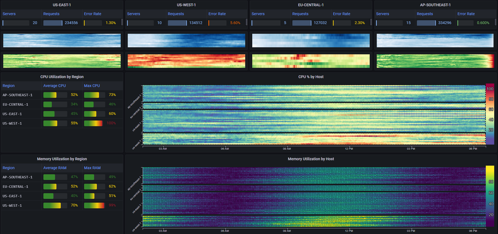
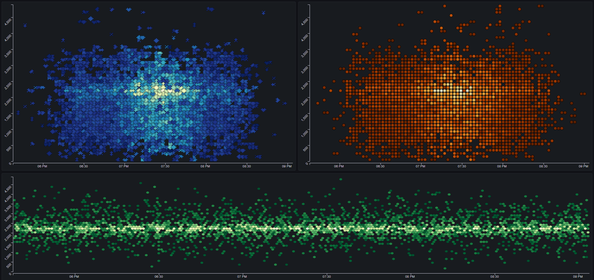
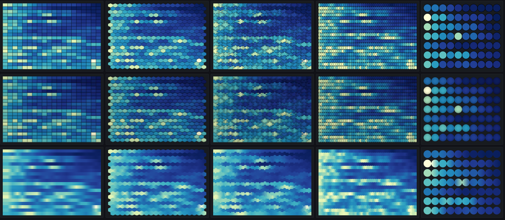
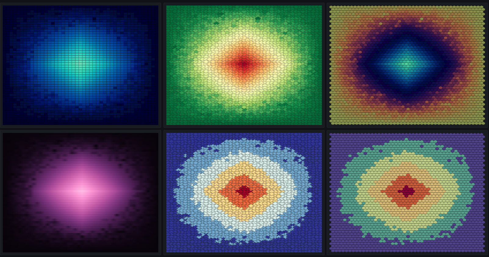
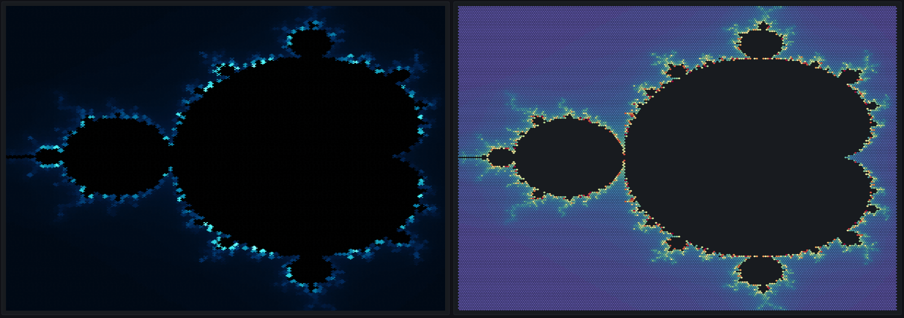

Examples#
I. Server Stats#
The following example showcases how a Mosaic Plot can be used to effectively visualize servers stats for a large number of servers
We have 50 different servers in 4 different regions, and are interested in seeing for each server, the number of requests, error rate, CPU utilization and memory utilization
Normally, it wouldn't be feasible to plot all 4 metrics over time for each of the 50 servers, so we would have to settle for summary stats
We would have something like this: 
While this dashboard gives us a pretty good summary of the performance in each region, it is lacking in several aspects:
- There's not enough room in the dashboard to add requests and error rate stats over time
- The data that is shown over time is only per region. We have no way to see the behavior of specific servers
By using Mosaic Plot panels, we can construct something like this: 
First, for each region, we've added two heatmaps
One that shows the number of requests per server over time (white to blue) and one that shows the average error rate per server over time (green to red)
By using Compact Mode we achieve an incredibly high data resolution. The top left heatmap for example (showing the number of requests per server in us-east-1), contains 2880 different cells/data points, while taking up the space that would normally fit only a sparkline or two, let alone trying to fit a line/area chart in that space
Next, we've added two larger heatmaps
The first shows the average CPU utilization of every server
The second shows the average memory utilization of every server
We've used the Grouping feature to clearly differentiate between each group of servers
This type of visualization allows us to get a clear picture of both the individual performance of each server, as well as the overall trends for each region
II. Basic Heatmaps#
The following example shows 3 basic heatmaps, visualized as Mosaic Plots with different styling parameters: 
III. Variations#
The following example shows the same data plotted plotted in 12 different styling variations
Each column shows a different Shape: Rectangle, Hexagon, Stacked Circle and Circle
The top row is the basic style
The second row adds a Bevel effect
The bottom row gets rid of the Outline and adds a Smoothing effect

IV. More Variations#
The following example shows the same data plotted plotted in 6 different styling variations
The middle and right plots on the bottom show the use of the Discrete Scale option. It can be very useful when the values can be categorized, such as assigning different value ranges to categories such as GREAT, GOOD, AVERAGE, BAD and TERRIBLE

V. Mandelbrot Set#
Just for fun, let's plot the Mandelbrot set using Mosaic Plots:
